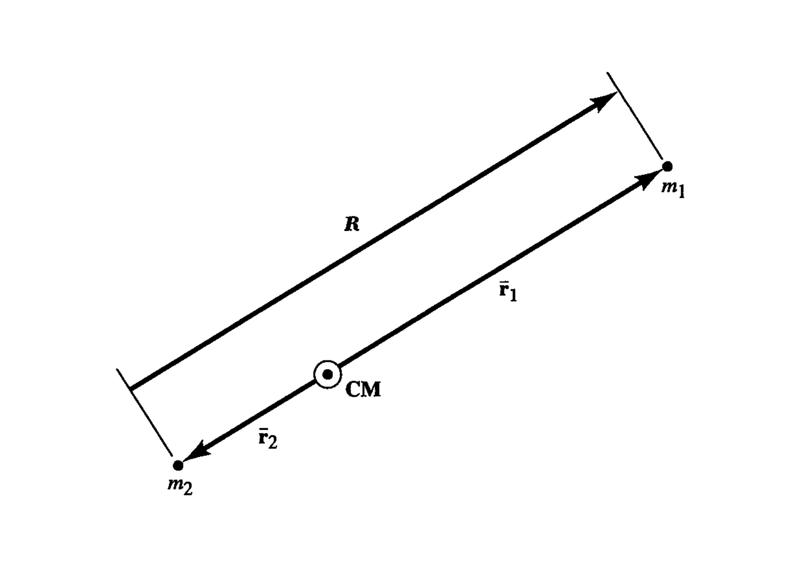
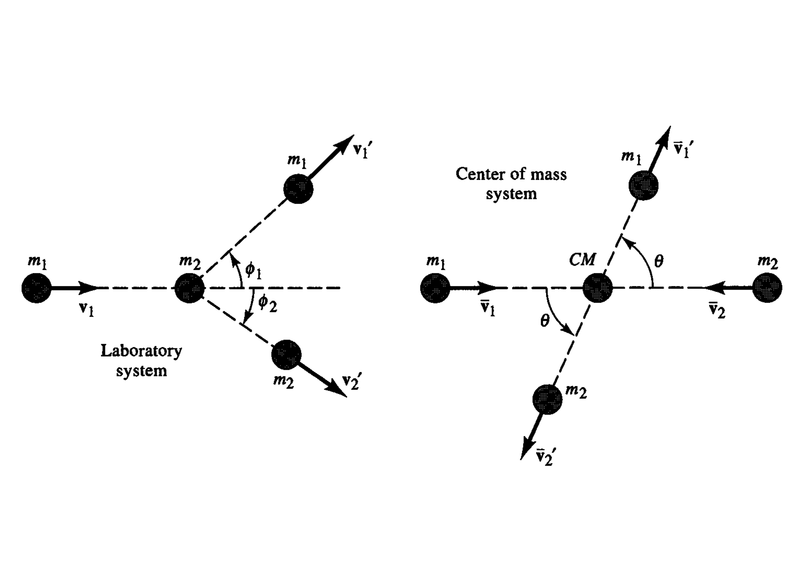
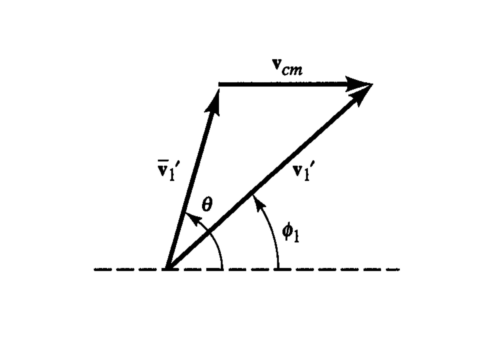
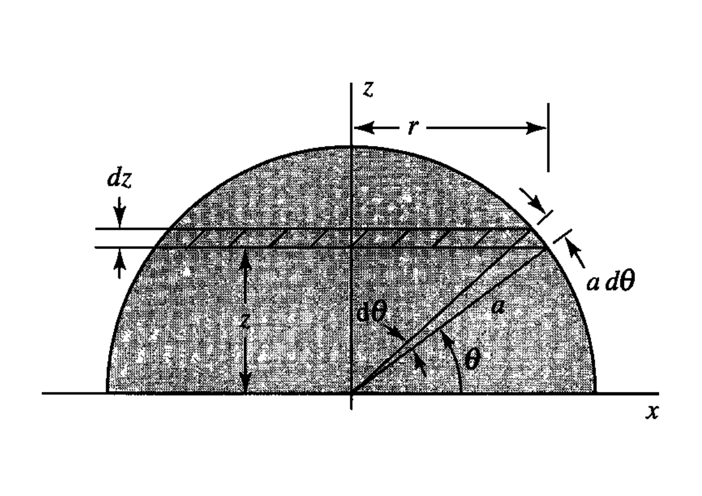
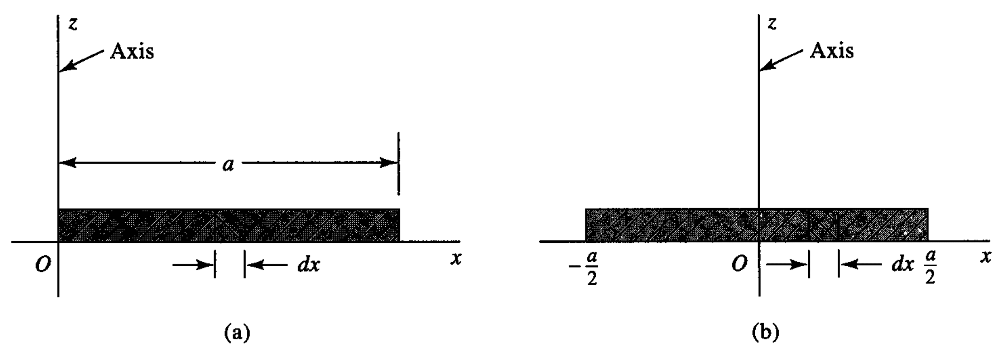

17. Dynamics of Systems of Particles#
In this unit, we will develop some general physical principles which we can use to study the behaviour of systems for which we wish to describe the motion of two or more particles. Then we will apply these general rules to specific examples of such systems.
17.1. Centre of Mass and Linear Momentum#
We begin with some definitions. In general, we are considering a system of \(N\) particles, each of mass \(m_j\) (\(j=1,2,...,N\)), situated at vector positions \(\vec{r}_j\). Using this notation, the center of mass of the system is the point with position:
Thus implies that the \(x\) coordinate (in a Cartesian frame) of the centre of mass is given by \(x_{cm}=\frac{\sum_{j=1}^N m_j\,x_j}{\sum_{j=1}^N m_j}\), with analogous expressions for \(y_{cm}\) and \(z_{cm}\).
The total linear momentum of our ensemble of particles is just the sum of all the individual momenta:
By definition, \(\vec{v}_j = \dot{\vec{r}}_j\). Hence:
where \(M=\sum_j m_j\) is the total mass, and the velocity of the centre of mass is \(\vec{v}_{cm} = \dot{\vec{r}}_{cm}\). Thus the total linear momentum of our system of moving particles is equivalent to their total mass multiplied by the velocity of their centre of mass, as defined above.
Let’s keep to a general treatment for the moment, and imagine that any particle with integer label \(i\) is subject to two types of force. The first is purely external (i.e., arises from a source completely outside the system), which we shall denote \(\vec{F}_i\). The second type of force is the force which may be exerted on particle \(i\) by any or all of the other particles in the system (for example, gravitational force). We represent this as the force on particle \(i\) due to particle \(j\), \(\vec{F}_{ij}\), with, of course, \(\vec{F}_{ii}=0\). The equation of motion for particle \(i\) thus becomes:
Now, we can in fact write \(N\) versions of the above equation, for each possible value of \(i\). If we added all of these together, we would obtain:
Now in the double summation, we would expect \(\vec{F}_{ij} = -\vec{F}_{ji}\) (for every action, there is an equal and opposite reaction). Hence the summed terms cancel and the double summation reduces to zero. We are left with:
where by definition \(\dot{\vec{p}}\) is equal to \(M\vec{a}_{cm}\), the total mass of the system multiplied by the acceleration of the centre of mass.
Thus, the acceleration of the centre of mass of our system of particles is equivalent to the acceleration of a single particle of mass \(M\) being acted on by the sum of all the external forces. For the case where all the particles are moving in a region of uniform gravitational acceleration \(\vec{g}\), this implies that \(M\vec{a}_{cm} = M\vec{g}\). In other words, if a projectile moving in a region of uniform \(\vec{g}\) were to explode during flight, the centre of mass of the pieces would follow the same path as the projectile would have followed, had it not exploded.
For the case of a system which is not acted on by any external forces, we would have \(\dot{\vec{p}} = 0\) – that is, the total linear momentum of the system is conserved in the absence of external forces. This statement is otherwise known as the principle of conservation of linear momentum.
Example Problem
At some point in its trajectory, a ballistic missile of mass \(m\) breaks up into three fragments of mass \(m/3\) each. One of the fragments continues on with an initial velocity of one-half the original velocity \(\vec{v_0}\) of the missile just before breakup. The other two pieces go off at right angles to each other with equal speeds. Find the initial speeds of the later two fragments in terms of \(\vec{v_0}\).
Conservation of momentum implies for the fragments (labelled \(1,2,3\)):
Since we are given \(\vec{v_1} = \frac{\vec{v_0}}{2}\), this becomes:
Taking the scalar product of both sides with itself, and noting that \(\vec{v_2}\cdot\vec{v_3}=0\):
17.2. Angular Momentum and Kinetic Energy of a System#
It seems logical to assign the total angular momentum, \( \vec{L} \), of our system as the sum of the individual angular momenta of its constituent particles:
To check whether or not total angular momentum is conserved, let’s calculate its time derivative:
The first summation on the right-hand side vanishes, since, by definition, \( \vec{v}_i = \dot{\vec{r}}_i \). We can rewrite the second summation as follows, noting that the vector \( m_i\,\dot{\vec{v}}_i \), through Newton’s second law, is equal to the sum of all the forces acting on the particle with label \( i \):
Now consider a pair of distinct particles with labels \( i \) and \( j \). The sum of the two corresponding terms in the double summation, involving their mutual internal forces, is \( \vec{r}_i \times \vec{F}_{ij} + \vec{r}_j \times \vec{F}_{ji} \). Since \( \vec{F}_{ij} = -\vec{F}_{ji} \), this is equal to \( (\vec{r}_i - \vec{r}_j) \times \vec{F}_{ij} \). Now, the difference \( (\vec{r}_i - \vec{r}_j) \) is simply the vector directed from the location of particle \( j \) to particle \( i \). If the internal forces are of a central nature, i.e., collinear with the vector separations between the pairs of particles in our system, then this cross product vanishes. Hence, we are left with:
Therefore, in the absence of external forces, the total angular momentum of the system is conserved, as well as its total linear momentum.
When the external forces are non-zero, equation (eq:dangmom) indicates that the total angular momentum will change with time, and its rate of change is given by the total moment of force, or torque, acting on the system.
The concept of the centre of mass can help us gain a little more insight into the nature of the individual motions which comprise the total angular momentum. We can rewrite the position of each particle as the sum of the position of the centre of mass plus the position of the particle relative to the centre of mass:
Taking the derivative with time of both sides of this equation reveals that, as expected, the velocity of each particle is the sum of the centre-of-mass velocity plus the velocity of the particle relative to the centre of mass:
Using this notation, the total angular momentum becomes:
Let us now analyse each of the four final summations in the equation above:
The first summation equals \( \left(\sum_{i=1}^N m_i\right)\,(\vec{r}_{cm} \times \vec{v}_{cm}) \), and is the angular momentum associated with a particle of mass equal to the total mass of the system, which moves coincidentally with the centre of mass of the system.
The second summation equals \( \vec{r}_{cm} \times \sum_{i=1}^N m_i\,\overline{\vec{v}}_i \). Since, by definition \( \overline{\vec{v}}_i = \vec{v}_i - \vec{v}_{cm} \), the factor \( \sum_{i=1}^N m_i\,\overline{\vec{v}}_i = \vec{p} - M \vec{v}_{cm} \), where \( \vec{p} \) is the total linear momentum of the system, and \( M \) the total mass. But by definition \( \vec{p} = M \vec{v}_{cm} \), and thus the second summation in the expansion for total angular momentum is zero.
The third summation equals \( \left(\sum_{i=1}^N m_i\,\overline{\vec{r}}_{i}\right) \times {\vec{v}}_{cm} \). Since \( \overline{\vec{r}}_{i} = \vec{r}_i - \vec{r}_{cm} \), this can be written as \( \left(\sum_{i=1}^N m_i\,(\vec{r}_i - \vec{r}_{cm})\right) \times {\vec{v}}_{cm} \). But since by definition \( \sum_{i=1}^N m_i\,\vec{r}_i = M \vec{r}_{cm} \), the third summation also evaluates to zero.
The fourth and final summation equals \( \sum_{i=1}^N m_i\,(\overline{\vec{r}}_{i} \times \overline{\vec{v}}_i) \), which can be thought of as the angular momentum carried by the motion of all the particles relative to the motion of the centre of mass.
We can summarise the results above with the statement that the total angular momentum of a system can be expressed as the sum of two terms. The first is the angular momentum of a fictitious particle with mass equal to the total mass of the system whose position and velocity coincide with the actual centre of mass. This component of the total angular momentum is sometimes referred to as `orbital angular momentum’.
The second component of a system’s total angular momentum, as stated above, is the angular momentum carried by the motions of the particles relative to that of the centre of mass. This component of the total angular momentum is sometimes referred to as `spin angular momentum’.
We will now consider an appropriate definition of the total kinetic energy of our system of particles. Again, it seems logical to adopt a definition of the sum of the individual kinetic energies of all the constituent particles:
As for the case of angular momentum, we can express the system’s total kinetic energy as the sum of two energy terms as follows (proof is fairly straightforward using the definition of \( \overline{v}_i \), and is left to the reader):
The first term is the kinetic energy of translation of the whole system, and the second is the kinetic energy of motion relative to the centre of mass.
17.3. The Two-Body Problem and Reduced Mass#

Consider a system consisting of two bodies of masses \(m_1\) and \(m_2\), as shown in the figure above. Using our previous notation, we can assign these masses with positions \(\overline{\vec{r}}_1\) and \(\overline{\vec{r}}_2\) relative to the centre of mass of the system, which we take to be at the origin for convenience. The position of the centre of mass lies somewhere on the line connecting the two bodies, since we must satisfy the definition of the centre of mass position:
Now, if the two bodies exert a gravitational force on each other, the equation of motion for bodies 1 and 2 can be written as:
where \(\vec{R}=\overline{\vec{r}}_1-\overline{\vec{r}}_2\) is the vector going from \(m_2\) to \(m_1\), as shown.
It is interesting to consider the dynamical evolution of the system by calculating the acceleration of the vector separation \(\vec{R}\), which is equal to \(\ddot{\vec{R}} = \dfrac{d^2\overline{\vec{r}}_1}{dt^2}-\dfrac{d^2\overline{\vec{r}}_2}{dt^2}\). Using the equations above, we find that this expression is equivalent to:
If we now define the reduced mass \(\mu\) of the system through \(\dfrac{1}{\mu} = \dfrac{1}{m_1} + \dfrac{1}{m_2}\), or equivalently \(\mu = \dfrac{m_1 m_2}{m_1 + m_2}\), we obtain:
where the unit vector \(\vec{e}_R = \vec{R}/|\vec{R}|\). This equation tells us that when we consider the motion of either body relative to the other, as represented by the behaviour of the vector \(\vec{R}\), the acceleration is always radially inwards towards the centre of mass and has magnitude \(\dfrac{G m_1 m_2}{\mu R^2} = \dfrac{G M}{R^2}\), where \(M = m_1 + m_2\).
Therefore, for the simple case where \(R\) is constant, the angular velocity \(\Omega\) with which both bodies rotate about the centre of mass (whose acceleration must be zero) must satisfy:
implying that the period of rotation is \(P = \dfrac{2\pi}{\Omega} = \sqrt{\dfrac{4\pi^2}{GM}R^3}\).
Previously, when considering the orbits of planets about the Sun, we assumed that the Sun was fixed in its position. This is equivalent to assuming that the orbiting body has a mass very small compared to the Sun, or, in the present context, that the reduced mass of the Sun-planet system is approximately equal to \(M_{\odot}\), since \(m \ll M_{\odot}\). The above equation shows us that there is a small correction to the orbital period when one more accurately considers the motion of the planet about the actual centre of mass of the Sun-planet system. If we express \(M\) in units of Solar mass, and orbital radius \(a\) in units of astronomical units (AU, the mean distance from the Earth to the Sun), we obtain a formula for the orbital period in units of years:
For most planets in the Solar System, the added mass term in this formula for orbital period makes very little difference – for example, the Earth-to-Sun mass ratio is only \(\sim 1/330000\). For the most massive planet, Jupiter, this ratio is \(\sim 1/1000\), which changes the ‘fixed Sun’ value for Jupiter’s orbital period by about \(0.05\%\). One can note, however, that for systems where the masses of the two bodies are more comparable, this correction would be much more important to take into account.
17.3.1. Binary Star Systems#
Half of all the stars in our galaxy are actually two-body systems, in which two stars revolve about their common centre of mass. The distances between the component stars can vary widely. The star Sirius is actually a binary system consisting of the luminous star known as Sirius, of mass \(\sim 2.1\,M_{\odot}\); and a much fainter white dwarf star, of mass \(\sim 1.05\,M_{\odot}\), which is situated at distances \(\sim 20\,\mathrm{AU}\) from its bright companion. The corresponding orbital period of the system is \(\sim 50 \,\mathrm{yr}\).
The X-ray source Cygnus X-1 is a binary system consisting of a \(\sim20\,M_{\odot}\) star whose companion is a black hole of similar mass. Their distance of separation is a comparatively small ~\(0.2\,\mathrm{AU}\). Matter from the outer layers of the larger `regular’ star in this system is being accreted by the black hole. As the material falls towards the black hole, it forms an accretion disc. As the matter in this disc orbits the black hole, it can lose energy by frictional heating and crash down into it, heating to temperatures exceeding tens of millions of degrees which makes the hot gas radiate strongly in the X-ray waveband.

Credit: ESA/HST
17.3.2. Dynamics of Collisions#
When two bodies collide, the forces they exert on each other during the time of contact can be considered internal forces in the system consisting of the two bodies alone. Thus total linear momentum must be conserved and the total vector momentum of the bodies before and after the collision must be equal:
In terms of the energy balance of the system, we can write:
where \(Q\) indicates that part of the initial total kinetic energy which is dissipated as, for example, heat energy during the collision. If \(Q=0\), no energy loss occurs and the collision is said to be elastic. The cases \(Q>0\) and \(Q<0\) respectively represent exoergic and endoergic collisions.
17.3.2.1. Direct Collisions (Single Axis of Motion)#
If our two colliding particles are constrained to move back and forth along only one coordinate axis – let us call it the \(x\) axis – the momentum conservation reads:
In principle, we can calculate the velocities after the collision (the primed quantities) if we know the velocities before the collision and if we also know something about the energy difference \(Q\). It is convenient to define a coefficient of restitution \(\epsilon\), which is the ratio of the speed at which the bodies approach each other before collision to the speed at which they recede from each other after the collision:
For elastic collisions (\(Q=0\)), \(\epsilon=1\).
For totally inelastic collisions, the bodies stick together after colliding and so \(\epsilon=0\). More generally, of course, \(\epsilon\) will lie somewhere between \(0\) and \(1\).
From the momentum conservation equation, we obtain:
Substituting this into the definition of \(\epsilon^2\), we get:
Solving this quadratic equation in \((\dot{x}_1-\dot{x}'_1)\), we find the velocity after collision:
The solution for \(\dot{x}'_2\) is:
For anelastic collisions with \(\epsilon=0\), where the bodies stick together after collision, we find that the post-collision velocities agree, \(\dot{x}'_2 = \dot{x}'_1\), as expected. For the elastic case \(\epsilon=1, m_1=m_2\), the bodies simply exchange velocities after collision – \(\dot{x}'_1 = \dot{x}_2, \dot{x}'_2 = \dot{x}_1\).
17.3.2.2. Impulse#
The concept of impulse is usually associated with forces which act for relatively short times, such as the forces between colliding bodies. If the bodies are in contact for an interval of time \(t_1\rightarrow t_1 + \Delta t\), and the force acting on one body is \(\vec{F}\), then the corresponding change in its momentum is:
The time integral of force in this equation is known as the impulse, and has units of momentum.
17.3.2.3. Oblique Collisions#
In this section, we consider the more general case of collisions where the motion of the colliding bodies is not confined to a straight line. We start by considering the case of a particle of mass \(m_1\) with initial velocity \(\vec{v}_1\) which strikes a particle of mass \(m_2\) which is initially at rest. The conservation of total momentum must still apply, provided we use the vector sum of momenta.
The energy balance may be written:
where we again use the symbol \(Q\) to denote total energy loss or gain.
For the special case \(m_1 = m_2 = m\), the energy balance condition may be written (now using symbols for momenta \(\vec{p} = m \vec{v}\), with magnitude \(p = m v\)):
Since \(\vec{p}_1 = \vec{p}'_1 + \vec{p}'_2\), \(p_1^2\) is also equal to:
Comparing the last two equations shows that \(\vec{p}'_1 \cdot \vec{p}'_2 = m Q\). Thus for elastic collisions where \(Q=0\), the final directions of motion of the incident and the target particle are orthogonal.
17.3.3. Centre Of Mass Coordinates#
Figure  shows the same collision between two particles in two different coordinate frames. In the so-called laboratory frame, we observe an incident particle of mass \( m_1 \) and velocity \( \vec{v}_1 \) striking a stationary target particle of mass \( m_2 \). After the collision, both particles are in motion and their velocities make angles \( \phi_1 \) and \( \phi_2 \) with the direction of the incident velocity.
Now, if we consider the same collision in the centre-of-mass coordinates, in which the centre of mass is stationary, the picture changes. We recall that for a system such as this, with two particles and no external forces, the centre of mass does not accelerate and remains situated on the line connecting the two particles. In the frame of reference where the centre of mass is stationary, the total momentum before collision and after collision must be zero. Thus, in the centre-of-mass frame, the particles move in opposite directions before the collision, both approaching the stationary centre of mass. And after the collision, their velocities make the same angle \( \theta \) with their initial directions of motion.
The same collision viewed in laboratory (left) and centre-of-mass (right) coordinates.
The momentum conservation and energy balance in the centre-of-mass coordinates can be written:
Since the first equation implies the momentum magnitude relations
the energy balance becomes:
where we use the usual definition of reduced mass \( \mu \), introduced in section 2.2.

The relation between velocity in the laboratory and centre-of-mass frames.
Let us now consider the relationship between the velocity in the laboratory and the centre-of-mass frames of reference. Figure illustrates the definition of the post-collision velocity in these two frames:
The diagram shows, using the orientation angles indicated, that:
Dividing these equations gives us a reasonably simple relation between the scattering angles in the two frames:
where \( \gamma = v_{cm}/\overline{v'}_1 = \dfrac{m_1 {v}_1/\overline{v'}_1}{m_1 + m_2} \).
For the special case of elastic collision where \( Q = 0 \), the energy conservation equation tells us that, in the centre-of-mass frame, \( \overline{p}_1 = \overline{p'}_1 \) — that is, \( \overline{v}_1 = \overline{v'}_1 \). It follows that:
We then obtain:
This value of \( \gamma \) for the elastic collision case indicates that, for the case where the target mass \( m_2 \) is extremely large compared to the mass \( m_1 \) of the incident particle, \( \gamma \rightarrow 1 \) and the two angles \( \theta \) and \( \phi \) approach equal value. For the case where these masses are equal, \( \gamma = 1 \) and
i.e., the scattering angle in the centre-of-mass frame is twice the value it has in the lab frame. Similar reasoning applied to the target particle shows that it has a scattering angle of \( (\pi-\theta)/2 \) in the laboratory system. Therefore, when an incident particle strikes a target of equal mass in the lab frame, the post-collision velocities are perpendicular to each other.
{PUT ROCKET PROBLEM IN PROBLEM SET}
17.4. Rotation of Rigid Bodies#
A rigid body may be considered a system of particles (mass elements) whose positions relative to each other remain fixed. In this section, we consider the properties of rotational motion of a rigid body, for the case where the axis of rotation maintains a fixed direction in space.
17.4.1. Centre of Mass of a Rigid Body#
Our previous definition of the centre of mass of a system of discrete particles can be generalized by an integral definition for a rigid, extended body. Using Cartesian coordinates, the position of the centre of mass thus becomes:
where \(\rho\) is the local density of the body and \(d\mathcal{V}\) is an infinitesimal volume element.
For the case of a body which takes the form of a thin shell, we could replace the mass element in the above definitions by \(\rho_S\,dS\) where \(\rho_S\) is a surface density (mass per unit area) and \(dS\) is a surface element.
For the case of a body which takes the form of a thin wire, we could replace the mass element in the above definitions by \(\rho_{\ell}\,d\ell\) where \(\rho_{\ell}\) is a linear density (mass per unit length) and \(d{\ell}\) is a length element.
If a rigid body has a mass distribution which is symmetric about a plane, then its centre of symmetry will lie in that same plane. To demonstrate this, we can consider a body which is symmetric about the \(xy\)-plane. We can divide the body up into pairs of equal mass elements, \(dM_i\) and \(dM_i'\), which have equal and opposite \(z\)-coordinates, \(z_i\) and \(z_i' = -z_i\). The \(z\)-coordinate of its centre of mass will thus be:
A similar result applies for a body which has an axis or a line of symmetry.
Solid Homogeneous Hemisphere
A body which has the form of a solid half-sphere with a uniform density \(\rho\) will have symmetry about the radius which is perpendicular to its plane face. Hence its centre of mass will lie on this line, which we will adopt as the \(z\)-axis.

Now we can divide the hemisphere into a series of thin circular discs (see Figure \ref{fig:hemisphere}) of infinitesimal thickness \( dz \) and variable radius \( r = \sqrt{a^2 - z^2} \), where \( a \) is the radius of the hemisphere and \( z \) is the axial coordinate of the disc. The mass of a disc will thus be:
Integrating to obtain the specific axial location of the centre of mass gives:
Thin Hemispherical Shell
For the case of a thin hemispherical shell, we use the angular coordinate \( \theta \) (see Figure \ref{fig:hemisphere}) to divide the shell’s surface into circular strips of mass \( \rho_S \, dS = 2\pi \rho_S a\, \cos\theta\, a\, d\theta \).
Note that \( \cos\theta\,d\theta = d(\sin\theta) \). Since \(\sin\theta = z/a\), then \( d(\sin\theta) = dz/a \). Therefore:
Thin Semicircular Lamina
A lamina is a body that has the form of a thin layer or plate. Consider a semicircular lamina of uniform density \( \rho \) which occupies the following points in Cartesian space:
where the cylindrical coordinates satisfy \( 0 \leq R \leq a \), where \( a \) is the radius of the semicircle, and \( 0 \leq \phi \leq \pi \). Using the cylindrical coordinates, we can calculate the \( z \)-coordinate of the centre of mass as follows:
17.4.2. Moment of Inertia#
Consider now the rotation of a rigid body about a fixed axis, which we shall refer to as the \( z \)-axis. The path of a single point in the moving body may be described by coordinates \( (x_i, y_i, z_i) \) where \( z_i \) remains fixed and the other coordinates describe a circular path \( x_i^2 + y_i^2 = r_i^2 \), where \( r_i \) is the constant perpendicular distance of the point from the axis of rotation.
The speed of the element of mass \( m_i \) located at this point will be
where \( \omega \) is the magnitude of the angular velocity of rotation. The individual velocity components of \( m_i \) are:
Here the azimuthal angle \( \phi_i \) is defined by \( x_i = r_i\, \cos\phi_i, y_i = r_i\, \sin\phi_i \).
These velocity components can also be calculated by using the vector identity:
with \( \vec{\omega} = \omega\, \vec{e_z} \).
Using these definitions, we can now calculate the total kinetic energy of rotation for the rigid body:
where \( I_z = \sum_i \, m_i r_i^2 \) is known as the body’s moment of inertia about its axis of rotation.
The angular momentum of a single mass element is \( \vec{r}_i \times m_i \vec{v}_i \). The \( z \)-component of this cross product is
The total \( z \)-component of the angular momentum, is thus:
Since the body in question is constrained to rotate about the \( z \)-axis, the rate of change of its angular momentum component in the \( z \)-direction is equal to the corresponding component of the moment of any external forces in that direction:
For a rigid body, \( I_z \) is constant, so \( N_z = I_z\, \dfrac{d\omega}{dt} \).
We can therefore consider physical quantities defined for translational motion alongside their counterparts for rotational motion:
Linear Momentum: \( p_x = m v_x \) Angular Momentum: \( L_z = I_z \omega \)
Force: \( F_x = m \dot{v}_x \) Torque: \( N_z = I_z \dot{\omega} \)
Kinetic Energy: \( T = \frac{1}{2} m v^2 \) Kinetic Energy: \( T_{rot} = \frac{1}{2} I_z \omega^2 \)
For bodies which are extended or continuous (as opposed to collections of discrete particles), we can generalize the previous definition of the moment of inertia from a sum to an integral:
where \( dM = \rho \, \mathcal{V} \) is a mass element, whose volume is \( d\mathcal{V} \), at a location where the density is \( \rho \). Let us now consider some examples of how we calculate the moment of inertia of different bodies.
Moment of Inertia of a Thin Rod

Figure 1 shows appropriate coordinates for calculating the moment of inertia of a thin rod of total mass \(m\) and length \(a\). In the first example, the rod rotates about an axis perpendicular to itself which passes through one of its ends. The appropriate moment of inertia is thus:
In the second example, the axis of rotation passes through the midpoint of the rod, and the moment of inertia becomes:
Moment of Inertia of a Thin Spherical Shell
Consider a thin spherical shell rotating about the \(z\) axis, which passes through the origin, taken to be the centre of the sphere. Using spherical coordinates and assuming the shell has a uniform surface density \(\sigma\) and radius \(a\), a surface element can be expressed as \(dS = a^2\,\sin\theta\,d\theta\,d\phi\).
The shell can be divided into circular strips whose surface elements all have a constant value of the coordinate \(z\), which equals \(a\,\cos\theta\). The perpendicular distance of any point on such a strip from the \(z\) axis is \(R=a\,\sin\theta=\sqrt{a^2-z^2}\). The mass of a strip is \(dM = 2\pi\sigma R \,a\,d\theta\). Hence the integrand \(R^2 dM = R^3\,(2\pi\sigma \,a\,d\theta) = (2\pi\sigma \,a^4\,\sin^3\theta\,d\theta)\).
The moment of inertia is thus:
using auxiliary variable \(u=\cos\theta\). We finally obtain:
This final evaluation can also be written as \(\frac{2}{3} M_s a^2\), where the mass of the shell is \(M_s = 4\pi \sigma a^2\).
17.4.3. The Parallel Axis Theorem#
Consider the moment of inertia about the \(z\) axis for a rigid body of arbitrary shape, which can be considered to be composed of mass elements \(\delta m_i\):
Using our previous `overbar’ notation for coordinates relative to the body’s centre of mass, we can write \(x_i = x_{cm} + \overline{x}_i\), with a similar expression for the \(y\) coordinate. Hence our moment of inertia becomes:
In the final expression above, the first summation is simply the moment of inertia taken about an axis – let’s label it \(z'\) – which is parallel to the \(z\) axis and which passes through the body’s own centre of mass. The second summation is the total mass of the body multiplied by the square of the perpendicular distance between the \(z\) axis and the \(z'\) axis.
For the final two summations, we can note that, according to the definition of the centre of mass, we would expect:
Hence, the expression for the moment of inertia reduces to:
which expresses, in mathematical form, the Parallel Axis Theorem for moments of inertia: The moment of inertia of a rigid body taken about any axis is equal to the moment of inertia about a parallel axis passing through the centre of mass, plus the product of the mass of the body and the square of the perpendicular distance between the two axes.
17.4.4. Towards Lagrangian Mechanics (Non-Examinable)#
An elegant alternative formalism for investigating the time-dependent motion of a system of particles evolved from the work of Leibniz (1646-1716), Bernoulli (1667-1748), D’Alembert (1717-1783) and Lagrange (1736-1813). As an introduction to Lagrangian mechanics, we take the approach in this section of describing how Lagrange’s equations can be derived from a variational principle developed by Hamilton (1805-1865), and consider a couple of simple applications.
17.4.4.1. Hamilton’s Variational Principle#
Defining the Lagrangian function \(L = T - V\) as the difference between the potential and kinetic energy of a system of particles, Hamilton’s principle is related to the evolution of the system between two times, \(t_1\) and \(t_2\). Out of the many possible ways that the positions and velocities of the constituent particles could evolve between these times, the actual motion is the trajectory (evolution in time of positions and velocities) of the system which either maximizes or minimizes the integral:
where we recognize that, generally, the Lagrangian will be a function of time. This condition is mathematically equivalent to the statement that a small increment or perturbation in the value of \(J\), taken with respect to its minimum or maximum value, must be zero:
This variation \(\delta J\) corresponds to a path for the system where the particle positions and velocities are infinitesimally different from those which occur for the optimal path — that is, the actual motion of the system for which \(J\) takes on an extreme value. When calculating \(\delta J\), however, all the parameters of the system are taken to be the same at the end times \(t_1\), \(t_2\) as they are for the optimal path.
Let’s consider the simple example of a single particle moving under the influence of a uniform gravitational acceleration \(g\) (for example close to the surface of the Earth). If the vertical coordinate above ground is denoted \(y\), then the Lagrangian can be written simply as \(L = \frac{m \dot{y}^2}{2} - m g y\). The corresponding variation in Hamilton’s integral becomes:
Now, \(\delta y\) is a function of time which represents the small difference in \(y\) between the actual motion of the particle and a conceptual trajectory which is infinitesimally different, at each time \(t\), by an amount \(\delta y\), and where \(\delta y = 0\) at \(t=t_1,t_2\). Since, according to this definition, the corresponding increment in velocity would be \(\delta \dot{y} = \frac{d}{dt} (\delta y)\), we obtain:
where:
Integrating the final expression by parts gives:
Now the first term on the right-hand side of the above equation vanishes, since \(\delta y = 0\) at the endpoints of integration. Our original expression for \(\delta J\) thus becomes:
Since this condition must hold for any conceptual path which is infinitesimally close to the actual motion, the only way it can be satisfied is if the integrand itself is zero for all times during the motion. That is:
which is equivalent to Newton’s Second Law for a particle falling in a uniform gravitational field.
17.4.5. Lagrange’s Equations#
We may repeat this kind of calculation for a more general case, where we have a system of particles whose positions can be described by a set of generalized coordinates \(q_i\), each of which is some function of time. The \(q_i\) are referred to as generalized because in this formalism they can be distances, angles, or some combination of these kinds of quantities. For each function \(q_i\), there is of course a generalized velocity \(\dot{q_i}\). Applying Hamilton’s principle to these more general parameters, one can prove (we give the result here without proof) that the motion of the system is constrained by the following equations:
These are the desired Lagrangian equations of motion for a system acting under conservative forces. If the equations are used to describe a motion where one or more particles are constrained in some sense (e.g., a particle constrained to move only on the surface of a sphere), then that constraint must be holonomic. In other words, it must be mathematically expressible by the condition that the value of some function \(f\) is zero at all times, where \(f\) can only be a function of the generalized coordinates and time.
We end this section by considering the motion of a single particle in a central field.
The potential energy of the particle, of mass \(m\), in the gravitational field of the central body, of mass \(M\) (\(M >> m\), with \(M\) stationary at the origin), is simply
where \(r\) denotes radial distance from the origin. The kinetic energy is
where \(\theta\) is an angular coordinate. The particle is constrained to move in a single plane, as we have explored in the section “Gravity”. The Lagrangian is:
Equation \(\ref{eq:lagrange}\), for the radial distance coordinate, reads:
Equation \(\ref{eq:lagrange}\), for the angular coordinate, reads:
Thus, the treatment of the problem using Lagrange’s formalism easily allows us to derive the radial equation of motion of the particle, as well as the mathematical expression of the conservation of its angular momentum.